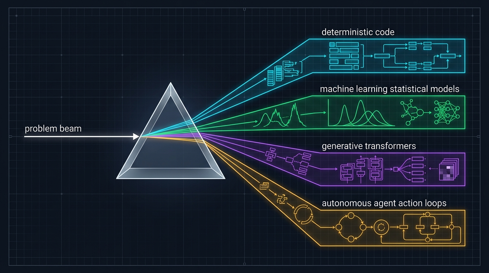

AI Is Not One Thing: The Problem Spectrum
The primary engineering skill is classification: identify the problem type before choosing a technique or model.

System Architectures
02 / 22
Four Real Tasks: Four Distinct Architectures
Forcing all workloads into an LLM degrades reliability and spikes cloud latency and costs.
Capability Spectrum
03 / 22
Predict, Generate, Act: The Three Primitives
Separating system capabilities across these three verbs determines your architecture and blast radius.
Software Engineering Baseline
04 / 22
Automation Is Not Automatically AI
Deterministic code remains the engineering default when business rules are stable and well-defined.
Traditional Programming vs Machine Learning
Who derives the rules: the human engineer writing conditions, or the optimization algorithm fitting examples?
Production Engineering
06 / 22
A Model File Is Not a Product: The MLOps Lifecycle
Training a weights file is only 15% of the total engineering effort. Production systems require continuous feedback.
Vocabulary Map: Precise Technical Boundaries
Avoid category errors: AI is broader than ML, Deep Learning is broader than LLMs, and ChatGPT is a product wrapper.
Systems Architecture
08 / 22
Model ≠ Product: The Architecture Iceberg
Raw weights are stateless matrix tensors. Over 80% of an AI product is runtime infrastructure, memory, and governance.
Optimization Mechanics
09 / 22
The Training Loop: How Weights Actually Learn
Neural networks optimize weights iteratively: Forward Pass → Loss Calculation → Backpropagation → Gradient Update.
Generalization Beats Memorization: The Overfitting Trap
High training accuracy is trivial to fake by rote memorization. Models must generalize to unseen test distributions.
Signal Architecture
11 / 22
Four Learning Patterns: The Origin of the Signal
The major branches of machine learning differ by how the optimization algorithm acquires its training signal.
Feature Abstraction
12 / 22
Deep Learning: Hierarchical Representation Learning
Neural networks construct representations automatically, from low-level pixels to high-level semantic concepts.
Foundation Models: The Reuse Paradigm Shift
Moving from one bespoke model per task to adapting a massive general-purpose foundation model via context.
Sandwich Architecture
14 / 22
Application Context Surrounds the Model
System reliability is achieved by strict prompt assembly on ingress and deterministic schema validation on egress.
Multimodal Systems
15 / 22
Generative AI Is Broader Than Text Chat
Modern multimodal transformers project disparate media into a shared latent vector space for unified reasoning.
Hallucination Anatomy
16 / 22
Fluent Is Not Grounded: Why LLMs Hallucinate
Language models optimize for linguistic plausibility, not factual database integrity.
Reliability Engineering
17 / 22
Fragile Workflow vs Production-Grade Architecture
Production-grade systems surround the probabilistic model with deterministic validation and guardrails.
Blast Radius Governance
18 / 22
Generation ≠ Execution: The Blast Radius Spectrum
Drafting text carries near-zero impact. Mutating external systems via tools introduces critical operational risk.
Decision Framework
19 / 22
Technology Selection Rule: The Engineering Compass
Select the component based on the structural nature of the problem, not marketing buzzwords.
Ask for the Source of Truth: Prevent Anti-Patterns
Do not ask the model to invent stored facts. Route queries to their authentic system of record.
Governance & NIST AI RMF
21 / 22
Controls Belong Around the Model: Defense-in-Depth
Risk management is an architectural discipline. Models are surrounded by concentric layers of deterministic checks.
Engineering Axioms & Next Steps
22 / 22
Mental Model for the Course: Task → Technique → Controls
Four foundational engineering axioms established in Lecture 01, and a preview of technical mechanics in Lecture 02.